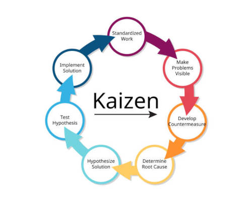

Kaizen Melhoria contínua.
Kaizen é ter o abito de melhoria continua nos projetos e com pequenas melhorias com uma qualidade
para uma melhor qualidade de um novo progeto.
Pequenos passos para mudar sua vida de um melhor aumento de vida. Muitas empresas têm buscado implementar os conceitos, técnicas e ferramentas da Produção Enxuta, principalmente, pela expectativa dos ganhos dramáticos já relatados na literatura em vários aspectos, tais como: lead-time interno, estoque em processo, aumento de produtividade, etc. No entanto, em muitos casos, a principal dificuldade encontrada não reside somente no desenvolvimento do sistema enxuto, mas na forma de condução efetiva da mudança no chão-da-fábrica. O objetivo deste artigo é mostrar a aplicação e implementação dos conceitos de produção enxuta por meio da metodologia Kaizen em uma empresa do setor médico-odontológico. Serão apresentados os conceitos utilizados no processo de implantação, bem como alguns resultados e conclusões obtidas

Como utilizar o kaizen no trabalho para iniciar com kaizen temos que melhorar com uma produtivideda e criar um plano de ação para uma melhoria com pequenas melhorias durante uma semana. Genba é o chão de fabrica.